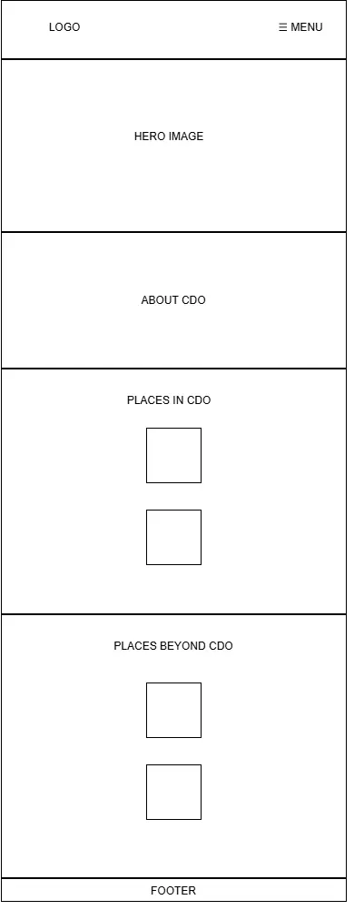
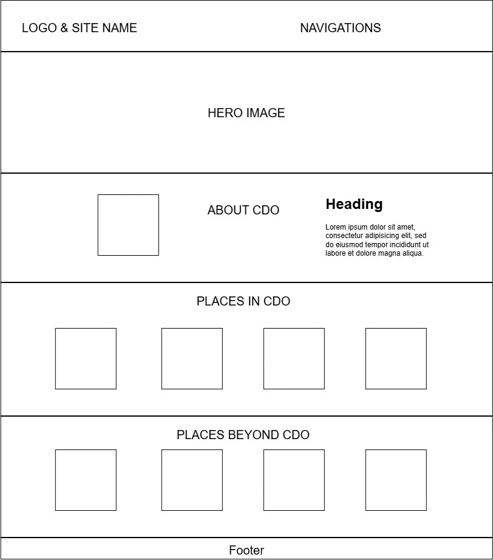

Site Name: Explore Beyond CDO
I chose this site name because I want this site to provide information of places to visit that are beyond CDO and not just in CDO.
Domain: expbeyondcdo.com
Site Purpose
The purpose of Explore Beyond CDO is to provide useful information about places to visit, activities to do, and experiences to try in Cagayan de Oro and nearby areas. The website is made to help visitors and tourists discover places they may not know about and give them ideas on what they can explore in and beyond CDO.
Scenarios
• What are places to go for a hike?
• Where can I contact for further questions?
Color Schema
• Gray Green
- Probably for the header background and footer.
• Dark Gray
- For texts and paragraphs.
• Beige
- For the main background.
Typography
• "Outfit", sans-serif
- For the header.
• "Merriweather Sans", sans-serif
- For the body.
Wireframes

Mobile View Wireframe

Wide View Wireframe